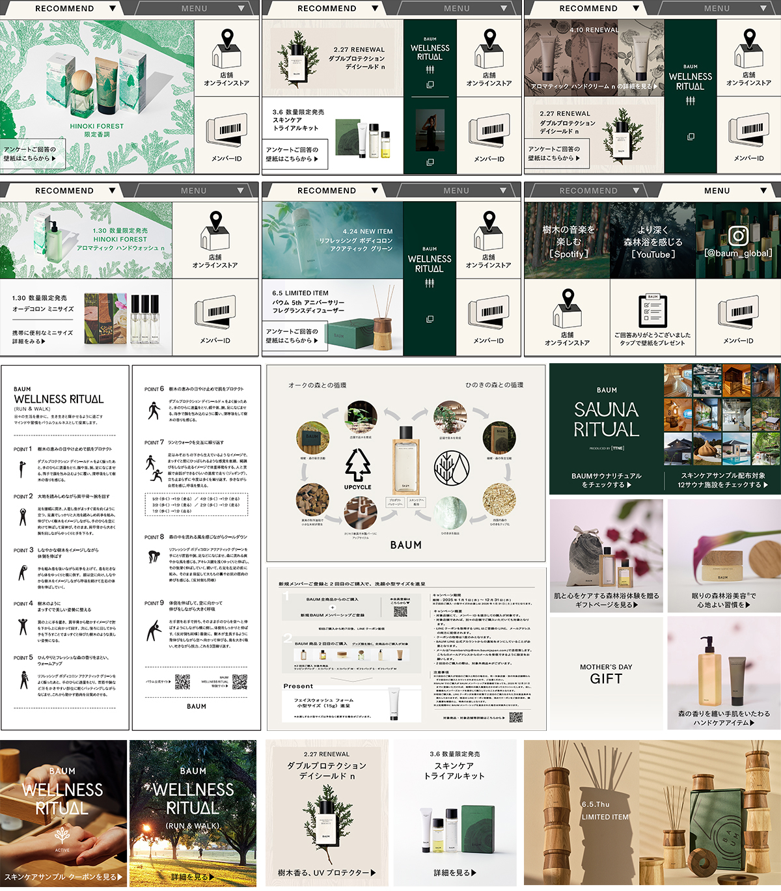

Jul.2024--Jun.2025
化粧品会社 公式サイト、SNS運用全般
化粧品メーカーにて、公式サイト、SNS運用アシスタントとして入社。
公式サイトの運用に伴う制作会社とのコミュニケーション全般（backlog、figma使用）。サイト構成案提出やデータ送付、確認からリリースまでを対応。
公式インスタグラム分析（SINIS）の週次報告の他、X投稿文言、LINEについては、APIとLINE公式アカウントを使用したセグメント別の配信企画からABテスト。LINEリッチメッセージの２タブ化やセグメント別のリッチメニューやバナー全般の作成。レギュレーションが厳しめのブランドなため、文字詰なども意識し作成。
応答メッセージを使用したフローチャート式の配信なども、LINE内の使用できるテンプレからブランドらしいデザインにできそうなものを選び企画から対応。
また、ブランドのアットコスメページの立ち上げと運用。店頭使用のPOPや商品説明資料PDFの日本語版、インバウンド向け簡体字、繁体字、英語版資料などを、提案を織り交ぜながら作成していました。
